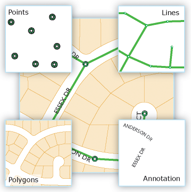
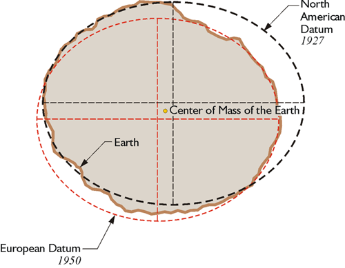

Interactive Web Maps
Bring maps in your web app
Created by Teodor Naydenov and Hristo Yankov
Agenda
- Technology overview
- Q&A session
- Break
- Hands on
What this workshop is:
- interactive activity
- brief introduction to GIS
- taste what can be done with the help of JS map library
- chance to have some fun
What this workshop is not:
- detailed reference of GIS
- refined workshop with shiny examples
- boring lecture to let you have a nap
What is a map?
Road map

World map

Population map
And a map is ...
Collection of features (objects) with geographical locations, projected on flat surface.
What is interactive map?

Virus tracing with interactive map

Want to see antoher shiny example in action...
WorldBank Contract AwardsEart weather conditions
Common properties of interactive map
- position & zoom controls
- layer controls
- markers
- search functionality
- ...
- data to be displayed
What app can benefit from interactive maps
Any app that operates with data related to geography locations
How a map can change your app?
Neighborhoods in SofiaAny ideas to make it better?
Bird eye over map technology stack
Data
Not an image. For an example a street on road map can be represented as polyline with several attributes.

Rendering
Convert data to an image. Each feature is "drawn" to a layer of the map.
Drawing rules for each feature type are configured. These can be: line width, line color, text, etc.
Rendering
Layers
Each layer contains set of features. Layers are placed on top of each other.

Layers
Tile map / Slippy map

In the browser
Geospatial data
Definition
Data that identifies geographic locations of features on Earth. These can be natural or constructed features, oceans, continents, rivers, cities, restaurants, stores, etc.
Geospatial data, GIS data or geodata has explicit geographic positioning information included within it.
Raster geospatial data
In raster data the entire area of the map is subdivided into a grid of tiny cells. A value is stored in each of these cells to represent the nature of whatever is present at the corresponding location on the ground. Raster data can be thought of as a matrix of values.
Examples for raster geospatial data:
- Satellite image
- Digital Elevation Model (DEM)
Satellite data
Digital elevation model
Raster geospatial data also includes
Beside raster band, raster geospatial data includes coordinate system and transformation.
Vector data
In vector data the features are recorded one by one, with shape being defined by the numerical values of the pairs of xy coordinates.
- A point is defined by a single pair of coordinate values
- A line is defined by a sequence of coordinate pairs defining the points through which the line is drawn
- An area (polygon) is defined in a similar way, only with the first and last points joined to make a complete enclosure.
Vector data

Feature
A feature is representation of real world object on a map.
- geometry - spatial representation, which consists of points, lines, polygons, multipoints, multilines, etc
- attributes - additional properties related to corresponding feature
Each feature has a type (class), which determines type of geometry and set of attributes. Features with same class can be combined into collections.
Feature
File formats
- Shapefiles
- GeoJSON
- KML
- OSM
Shapefiles
Binary format developed by ESRI. The main file types have the suffixes .shp, .shx and .dbf, but there are several more.
Contains vector data organized as features placed in layers. Each feature has geometry and other attributes.
Work with shapefiles
- ArcGIS suite
- QGIS
- GDAL/OGR libraries, ogr2ogr utility
GeoJSON
GeoJSON is a format for encoding a variety of geographic data structures.
Based on well known JSON file format.
Some taste of GeoJSON
{
"type": "Feature",
"geometry": {
"type": "Point",
"coordinates": [125.6, 10.1]
},
"properties": {
"name": "Dinagat Islands"
}
}
KML
Developed by Keyhole, later bought by Google. The file format is based on XML. The file contained both: geographic data and style, which instruct browser how to render data.
KML is now open standard.
WKT and WKB
- POINT(15 20)
- LINESTRING(0 0, 10 10, 20 25, 50 60)
- GEOMETRYCOLLECTION(POINT(10 10), POINT(30 30), LINESTRING(15 15, 20 20))
Spatial Databases
Spatially enabled database is database system, which is aware of the notion of space and direct interaction with spatial objects and concepts
Spatial data types & indexes
Spatial databases can store points, lines, polygons, etc directly in the database in the form of geometry columns.
Spatial databases support index on geometry columns, which dramatically speeds up lookup operations
Spatial data types in DB table
Spatial operators/functions
Spatially enabled databases support large set of operators, which can be used in queries such as: contains, intersects, crosses, closest point and many more.
Spatial databases
- PostGIS (PostgreSQL)
- MySQL
- SpatiaLite (SQLite)
- MongoDB
- Oracle
- MS SQL Server
- CartoDB (SaaS, based on PostGIS)
Reasons to use spatial database
Files with spatial data allow effective storage of large amount of information, but are very inefficient regarding finding any interaction between features
Spatial databases can save the day for any GIS application, which needs to operate effectively with features. Typical example: find all features, which are contained in rectangle with some coordinates.
Get all features inside a rectangle
Find a route
Sources of geospatial data
- Openstreet Map
- Natural Earth
- World Borders Dataset
- GeoHive
- OpenWeatherMap (API)
- Landsat
- Global Land One-kilometer Base Elevation (GLOBE)
Have a look at Wikipedia: List of GIS data sources
Coordinates and projections
Geographical coordinate system is method for describing geographical location on Earth's surface, using measures of latitude and longitude.

Datum
Datum is mathematical model that approximates the shape of the Earth, which is quite uneven and complex. Datum is used along with coordinate system for accurate position, length and area calculations.
A Simple Explanation of Datum (Youtube)One of the most widely used global datum is WGS84.
Datum
Projection
A projection is a series of transformations which convert the location of points on a curved surface(i.e. datum) to locations on flat plane (i.e. transforms coordinates from one coordinate reference system to another).Different projections

Geographic projection
A.k.a. equirectangular projection or plate carrée projection.
WGS84 Web Mercator
Defacto standard in web mapping. EPSG code: EPSG:3857.
Projection distortion
Each projection from Earth's surface to flat surface impose some distortions.
Projection distortion
Rendering
Raw geospatial data can be meaningless for human eye. Rendering is the process, which transforms raw data to another form (i.e. image), which can be understood by humans.
Rendering can be quite complex process, depending on the nature of the data and desired map look and feel.
Rendering flow
The inputs are
- geospatial data - vector or raster, described in some formats. Spatial reference (i.e. coordinate system and datum) are integral part of data.
- configuration - determines how features will be drawn on the image, i.e. colors, brushes, fonts, etc. It is common to place different feature types in separate layers.
- map properties - projection, envelope, file format.
Rendering flow diagram

Where rendering happens
Generally it depends on type of application. For web maps, we have following options.
- on the server - creating the base layer, which very complex and includes a lot of features.
- browser - with the help of javascript library. Used to provide additional information on the top of the base layer.
For some interactive web maps, which lack base layer, rendering can be performed entirely in the browser.
Base layer and other information
Base layer and other information
Rendering on the server
Appropriate for complex maps, which includes a lot of features. Most popular toolkits:
- Mapnik - probably the famous rendering toolkit. It is written in C++, but has bindings for Pythons and Javascript
- Geotools - Java based GIS toolkit. Besides rendering a map, it offers a bunch of other tools for manipulating GIS data
Mapnik architecture

Mapnik datasources
Mapnik is very flexible regarding sources of data. They can be:
- Shapefile
- PostGIS/SQLite
- OSM (XML)
- Raster image
Rendering in the browser
Drawing is performed by javascript library. The geospatial data comes in GeoJSON, CSV, WKT or other "micro" format.
Relatively easy to configure, but has limitations regarding data amount and performance.
JS libraries
- Google Maps API
- Leaflet
- Open Layers
- D3js
JS libraries capabilities
Despite of being simpler than server renderer toolkits, JS client libraries give a lot of functionality for developer including manipulation of features, coordinates, projections, renderer styles and many more.
They allows to use base layer, rendered on the server plus additional features, rendered in the browser.
JS libraries are inevitable for every kind of interactivity of the web map!
Map tiling
The continuous image of the world is divided to small square images called tiles.
Zoom level
- Zoom in - more details, but smaller area is shown.
- Zoom out - less detail, but larger area is shown.
Map scale depends not only on zoom level, but on monitor DPI as well.
Tile pyramid
For each map "zoom level, there is separate layer of tiles

Tile numbering
Each tile has coordinates, which depends on zoom level. For zoom level 2, tiles look like this:
Tile caching
Tile rendering is relatively cpu intensive process. Since most geospatial data remains unchanged for a long period of time, it is effective to cache rendered tiles.
Protocols for tile transfer
Currently, the mostly used protocol for transfering tiles from server to client is HTTP with REST API. The common URL pattern looks like:
http://{tile_server}/{z}/{x}/{y}.png
{z} = zoom level
{x},{y} = tile number
End to end server solutions
- Geoserver
- Mapnik + TileCache
- Mapserver
Client side
Browser is powerful exection environment, capabable of interpreting HTML/CSS and JavaScript code. Modern JS engines such as V8 (Chrome) and Rhino(Mozilla) provides exceptional performance.
Interactive maps in the browser
Implementation of interactive maps is not possible without using appropriate JS map library which:
- Handles all user controls including zooming, panning, enabling additonal layers, etc.
- Requesting corresponding tiles from the server
Additional functionalities
Modern JS map libraries support many more functionalities, including:
- tile caching
- markers
- overlay
- drawing of different shapes
- ...
JS map libraries
- Google maps API
- openlayers
- leaflet
One more truly amazing library is D3js. Not designed to deal with maps initially, now it has great support dealing with GeoJSON features and tiles.
Leaflet(js)
Leaflet is one of the leading JS libraries for interactive maps. It's simplicity and performance make it an excellent choice for web and mobile apps with map support.
Leaflet features
- Raster layers: tiles and WMS
- Vector layers: polylines, polygons, circles, and popups
- Markers and popups
- GeoJSON data
- Browser events handling
- Heatmaps and choroplets
Leaflet in action
Heatmaps with Leaflet
Choroplets with Leaflet
Questions
???
The End
Thank you!